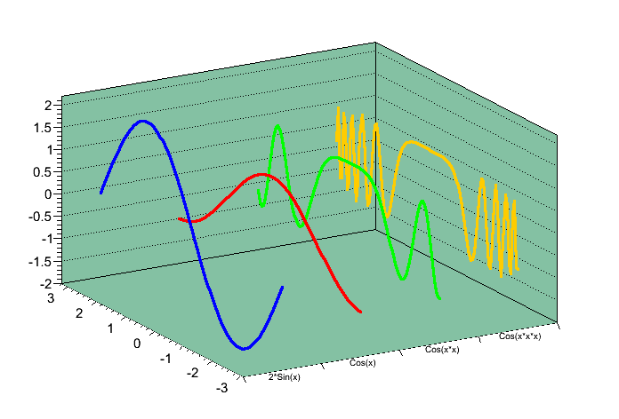

{
TCanvas *c1=new TCanvas("c1", "A canvas", 10,0, 800, 600);
c1->SetLogy();
histo_dummy=c1->DrawFrame(0,1e-4,27,10);
TF1 gaussian_func("gaussian_func","gaus",0,25.4);
gaussian_func.SetLineColor(kRed);
gaussian_func.SetParameters(1e-2,10,3);
gaussian_func.Draw("same");
}
root [0] TH1D * histo = new TH1D ("histo","",20,-5.,5.) ;
root [1] histo->FillRandom("gaus",1000) ;
root [2] histo->Draw("hist,text") ;
{
Double_t x[10] = {1.,2.,3.,4.,5.,6.,7.,8.,9.,10.};
Double_t y[10] = {.4,.5,.1,.3,.8,.4,.5,.6,.2,.1};
Double_t z[10] = {1.,2.,3.,4.,5.,6.,7.3,8.,9.,10.};
TGraph2D *gr = new TGraph2D("graph2d","graph2d",10,x,y,z);
gr->SetMarkerStyle(20);
gr->SetMaximum(7.5);
gr->SetMinimum(2.5);
gr->Draw("zpcol");
}
{
c1 = new TCanvas("c1","multigraph L3",200,10,700,500);
c1->SetFrameFillColor(30);
TMultiGraph *mg = new TMultiGraph();
TGraph *gr1 = new TGraph(); gr1->SetLineColor(kBlue);
TGraph *gr2 = new TGraph(); gr2->SetLineColor(kRed);
TGraph *gr3 = new TGraph(); gr3->SetLineColor(kGreen);
TGraph *gr4 = new TGraph(); gr4->SetLineColor(kOrange);
Double_t dx = 6.28/100;
Double_t x = -3.14;
for (int i=0; i<=100; i++) {
x = x+dx;
gr1->SetPoint(i,x,2.*TMath::Sin(x));
gr2->SetPoint(i,x,TMath::Cos(x));
gr3->SetPoint(i,x,TMath::Cos(x*x));
gr4->SetPoint(i,x,TMath::Cos(x*x*x));
}
mg->Add(gr4); gr4->SetTitle("Cos(x*x*x)"); gr4->SetLineWidth(3);
mg->Add(gr3); gr3->SetTitle("Cos(x*x)") ; gr3->SetLineWidth(3);
mg->Add(gr2); gr2->SetTitle("Cos(x)") ; gr2->SetLineWidth(3);
mg->Add(gr1); gr1->SetTitle("2*Sin(x)") ; gr1->SetLineWidth(3);
mg->Draw("a fb l3d");
}
